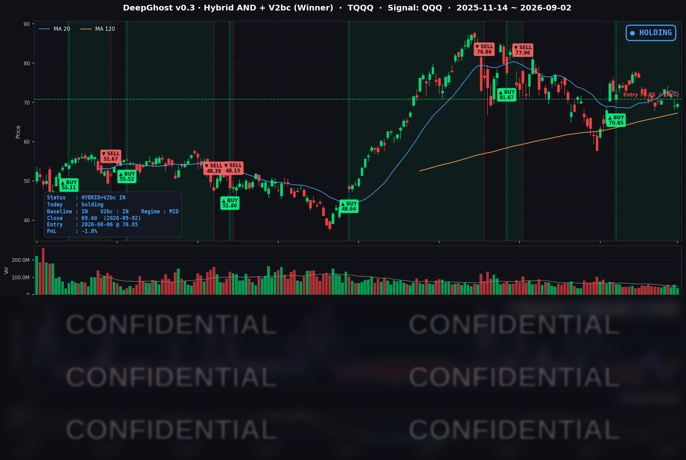

👻 매일 시그널과 히스토리를 홈페이지에서 한눈에 → www.ghostai.co.kr
나흘 오르던 국채 금리가 멈춰 서면서 3거래일 이어지던 하락이 끊겼습니다. 다만 오른 쪽은 소형주와 반도체였고 대형 소프트웨어는 떨어졌습니다. 베이지북에서 AI 시장 성장을 긍정적으로 본다는 코멘트로 투자 심리가 소폭이나마 개선된 모습이었습니다.
📊 오늘의 매매 신호
| 항목 | 내용 |
|---|---|
| 오늘 할 일 | ✅ 아무것도 안 해도 됩니다 |
| 포지션 상태 | 📈 TQQQ 보유 중 (IN POSITION) |
| 매수 진입일 | 2026-08-06 (20거래일째) |
| 진입가 → 현재가 | $70.85 → $69.60 |
| 현재 포지션 수익 | -1.76% |
TQQQ 시그널 — IN POSITION
현재 상태: 매수 포지션 유지 중 | 이번 포지션 수익률 -1.76%

나스닥100(QQQ)이 +0.23% 오르는 데 그쳤고 TQQQ는 +0.65% 마감했습니다. 전일 -2.40%였던 전략의 평가손익은 오늘 -1.76%로 손실 폭이 조금 줄었습니다. 8월 6일 진입 이후 20거래일째 보유 상태이며, 오늘 새로 발생한 매수·매도 신호는 없었습니다.
하나 짚고 갈 점이 있습니다. 이 전략은 크게 빠진 종목을 곧바로 사는 방식이 아닙니다. 오늘 장 마감 후 브로드컴이 다음 분기 매출 전망을 시장 기대보다 낮게 제시하면서 시간외에서 5% 내렸는데, 이렇게 하루에 급락한 종목은 모델의 매수 후보에서 오히려 멀어집니다. 떨어진 것을 주워 담는 구조가 아니라, 가격 흐름이 살아 있는 구간에 올라타는 구조이기 때문입니다. 급락 종목은 며칠이 지나 가격이 안정된 뒤에야 후보로 다시 올라옵니다.
오늘 미국 시장 — 시황 요약
지수 마감
| 지수 | 종가 | 등락률 | 비교 기준 |
|---|---|---|---|
| S&P 500 | 7,666.60 | +0.46% | 전일 대비 |
| 나스닥 종합 | 26,217.83 | +0.45% | 전일 대비 |
| 다우존스 | 53,061.95 | +0.56% | 전일 대비 |
| 러셀 2000 | 2,953.17 | +1.13% | 전일 대비 |
| QQQ (나스닥100) | 709.24 | +0.23% | 전일 대비 |
| TQQQ | 69.60 | +0.65% | 전일 대비 |
네 지수가 모두 올라 3거래일 이어지던 하락을 끊었습니다. 상승 순서는 러셀 2000 → 다우 → S&P 500 → 나스닥 → QQQ로, 소형주가 앞서고 대형 기술주가 뒤에 섰습니다.
오른 종목 수에 비하면 지수 상승폭은 작았습니다. S&P 500의 11개 업종 중 9개가 올랐고 구성 종목의 약 60%가 상승했는데도 지수는 0.5% 남짓에 그쳤습니다. 시가총액 상위 일부가 내리면서 지수가 종목 수만큼 따라가지 못한 것입니다.
거래는 활발하지 않았습니다. QQQ 거래량은 20일 평균의 0.75배였습니다. 이틀 뒤 고용보고서를 앞두고 관망세가 이어졌습니다. 주간으로 보면(8/27 대비) 나스닥 -1.22%, 러셀 2000 -2.03%로, 오늘 반등에도 잭슨홀 이후의 하락분은 아직 되돌리지 못했습니다.
국채 금리 동향
| 만기 | 수익률 | 전일 대비 |
|---|---|---|
| 3개월 | 3.772% | 0.0bp |
| 5년 | 4.552% | -0.5bp |
| 10년 | 4.796% | 0.0bp |
| 30년 | 5.267% | -0.1bp |
금리가 한 자리에 멈춰 섰습니다. 4개 만기 모두 변화가 1bp 미만이었고, 10년물은 4.796%로 전일과 소수점 셋째 자리까지 같았습니다. 나흘간 이어지던 상승이 오늘 처음 쉬어갔습니다.
장단기 스프레드(10년−3개월)는 +102.4bp로 전일과 같습니다. 역전 구간이 아니며 우상향 곡선을 유지하고 있어, 채권 시장이 경기 침체를 가리키는 형태는 아닙니다. 다만 3개월물 3.772%가 정책금리 상단 3.75%에 붙어 있어 시장은 인하가 아니라 동결 또는 인상 쪽을 반영하고 있습니다.
주간으로 보면 금리는 크게 올랐습니다. 8월 27일 대비 5년물 +15.6bp, 10년물 +12.4bp로 중단기 구간이 가장 많이 올랐습니다. 오늘 상승의 직접적 배경은 금리가 더 오르지 않았다는 사실 하나였고, 그래서 금리에 가장 민감한 소형주가 가장 크게 반응했습니다. 반대로 금리의 절대 수준이 이미 높아 밸류에이션 부담이 큰 대형 기술주의 상승폭은 제한적이었습니다.
연준 발언 & 금리 패스
뉴욕 연은 존 윌리엄스 총재가 오늘 발언했습니다. 최근의 국채 금리 상승은 경제가 강하다는 신호이며 투자 수요가 밀어올린 결과라고 설명했고, 9월 인상 여부에는 판단을 유보했습니다. "현재 통화정책이 향후 1~2년 안에 인플레이션을 목표로 되돌리기에 충분한지, 아니면 추가 조치가 필요한지 지금은 명확하지 않다"는 표현입니다. 관세나 에너지 가격 상승의 2차 파급은 아직 보이지 않으며 기대 인플레이션은 잘 고정돼 있다고 덧붙였습니다.
시장은 이를 완화 신호로 받아들였습니다. 8월 28일 잭슨홀에서 워시 의장이 매파적으로 선을 그은 직후라, FOMC 서열 2인자가 인상의 필요성에 확신을 보이지 않은 점이 부각됐습니다. 오늘 금리가 멈춰 선 배경입니다.
정책금리는 3.50~3.75%에서 동결 중이며, CME FedWatch 기준 9월 25bp 인상 확률은 잭슨홀 이후 57~66% 구간입니다. 예측시장은 동결 쪽을 절반 남짓으로 봐 더 팽팽합니다. 9월 16일 FOMC의 방향은 9월 4일 고용보고서가 가르게 됐습니다.
오늘의 핵심 이슈
1. 금리가 멈추자 3거래일 연속 하락이 끊겼습니다. 10년물이 전일과 같은 4.796%로 마감했고 나머지 만기도 변화가 1bp 미만이었습니다. 잭슨홀 이후 나흘간 5년물이 15.6bp 오르며 주가를 눌러온 흐름이 오늘 처음 쉬어갔습니다. 금리에 가장 민감한 소형주 러셀 2000이 +1.13%로 가장 크게 올랐고, VIX는 16.34에서 15.20으로 6.98% 내렸습니다.
2. 엔비디아 혼자 +3.21% 오르며 지수 상승분의 상당 부분을 만들었습니다. 블룸버그가 엔비디아의 허깅페이스 인수가 약 140억 달러 규모로 이번 주 안에 마무리될 수 있다고 보도했습니다. 8월 27일 처음 나온 129억 달러 보도에서 금액이 올라간 것입니다. 반도체 강세는 넓게 퍼져 마이크론 +2.43%, 퀄컴 +2.01%, 인텔 +1.21%로 이어졌습니다. 다만 마이크로소프트 -0.84%, 브로드컴 -0.66%, 애플 -0.05%로 다른 대형주는 내려, 오른 종목이 60%에 달했는데도 S&P 500은 +0.46%에 그쳤습니다.
3. 고용 지표가 약해지면서 무게추가 금요일 고용보고서로 넘어갔습니다. 오늘 발표된 8월 ADP 민간고용은 38,000명 증가로 시장 예상 약 48,000명을 밑돌았고 7월(44,000명)보다도 둔화됐습니다. 제조업이 17,000명 줄어든 반면 서비스업은 48,000명 늘어 업종별로 방향이 갈렸습니다. 같은 날 나온 연준 베이지북도 고용이 "전반적으로 매우 소폭" 증가에 그쳤다고 기록했습니다. 물가는 인상을 가리키는데 고용은 둔화되는 구도라, 9월 4일 08:30(동부시간) 8월 고용보고서가 9월 FOMC를 좌우하게 됐습니다. 시장 예상 비농업 신규고용은 +58,000명입니다.
변동성 & 투자심리
VIX는 15.20으로 전일 16.34 대비 -6.98% 내렸습니다. 전일 장중 16.80까지 올랐던 긴장이 하루 만에 풀렸습니다. 최근 20거래일 범위가 14.25~16.34이므로 현재는 그 중간 부근이고, 절대 수준은 여전히 낮습니다.
공포탐욕지수는 35 안팎으로 Fear 구간입니다. 지수는 올랐는데 심리 지표는 여전히 공포 구간에 머물러 있습니다. 상승폭이 0.5% 안팎으로 작았고 거래량도 20일 평균의 0.75배에 그쳤다는 점과 맞물립니다. 매수세가 강하게 들어온 날이 아니라 금리 압력이 잠시 멈춘 덕에 하락이 끊긴 날입니다. 이런 반등은 촉발 요인이 사라지면 되돌려지기 쉽습니다.
매크로 & 원자재
| 품목 | 종가 | 등락률 | 비교 기준 |
|---|---|---|---|
| WTI 원유 | $90.63 | +0.45% | 전일 대비 |
| Brent 원유 | $95.23 | +0.61% | 전일 대비 |
| 금 선물 | $4,434.30 | +1.98% | 전일 대비 |
| 금 ETF (GLD) | $402.78 | +1.52% | 전일 대비 |
유가는 이틀째 올라 WTI 90달러, Brent 95달러 위에 자리 잡았습니다. 8월 27일 대비로는 WTI +8.5%, Brent +6.2%입니다. 미군이 호르무즈 해협 인근 이란 목표물을 다시 타격했고 이란이 인근 국가 방향으로 대응한 것으로 전해지면서 공급 차질 우려가 이어졌습니다.
금은 +1.98% 반등했습니다. 잭슨홀 이후 금리가 오르며 5.7% 내렸던 흐름이 오늘 멈췄습니다. 금리 상승이 쉬어간 것과 중동 리스크가 함께 작용한 결과로 보입니다. 에너지 가격 상승이 물가에 얹히면 연준의 선택지는 좁아집니다.
주요 종목 동향
| 종목 | 종가 | 등락률 | 비고 |
|---|---|---|---|
| NVDA | 224.41 | +3.21% | 허깅페이스 약 140억 달러 인수 임박 보도 (블룸버그) |
| META | 592.85 | +2.47% | 실시간 음성 인식 모델 공개 + 8/26 아동 안전 소송 합의로 법적 불확실성 해소 |
| MU | 956.08 | +2.43% | DRAM·NAND 계약 가격 상승 |
| NFLX | 82.73 | +2.38% | 개별 재료 없이 커뮤니케이션 업종 강세 동조 |
| QCOM | 169.96 | +2.01% | 반도체 강세 동조, 데이터센터 사업 관련 보도 |
| INTC | 90.05 | +1.21% | 반도체 강세 동조 |
| GOOGL | 337.12 | +0.63% | 지수 수준의 반등 |
| TSLA | 357.01 | +0.26% | 장중 349.92까지 밀렸다가 회복 |
| AMZN | 254.98 | +0.02% | 보합. 최근 5거래일 -2.04%로 상대적 약세 |
| AAPL | 324.96 | -0.05% | 개별 재료 없이 보합, 전일 +2.6% 상승분은 지켰습니다 |
| AVGO | 367.24 | -0.66% | 장 마감 후 실적 발표 — 아래 참조 |
| MSFT | 496.82 | -0.84% | 커버리지 중 낙폭 최대. AI 설비투자 회수 시점 부담 지속, 사흘 연속 하락 |
브로드컴 실적 (9/2 장 마감 후): AI 반도체 매출이 167억 달러로 전년 동기 대비 +221%, 회사가 제시했던 160억 달러 가이던스를 넘겼습니다. 전체 매출도 +86% 늘어 컨센서스를 웃돌았습니다. 그런데 4분기 매출 가이던스가 348억 달러로 컨센서스 350.3억 달러를 소폭 밑돌면서 시간외에서 5% 내렸습니다. 9월 2일 종가는 실적 발표 전 가격이므로 반응은 9월 3일 종가에 나타납니다.
브로드컴과 마이크로소프트가 받는 질문은 같습니다 — AI 설비투자에 쓴 돈이 언제 수익으로 돌아오는가. 실적이 좋아도 다음 분기 전망이 기대에 못 미치면 주가가 내리는 국면이라, 목요일 반도체 업종 전반의 방향을 정하는 재료입니다.
Ghost.AI — Quantitative AI Investment
Model: DeepGhost v0.3 | Transformer-Based Deep Learning
Coverage: 13 tickers | Updated every trading day after US market close
⚠️ 본 자료는 정보 제공 목적으로만 작성되었으며 투자 권유가 아닙니다. 모든 투자의 책임은 투자자 본인에게 있습니다. 과거 성과가 미래 수익을 보장하지 않습니다.
[유의사항]
- 본 서비스는 불특정 다수를 대상으로 발행되는 단방향 정보 제공 서비스이며, 투자자 개인의 재산 상황·투자 목적·위험 선호도를 반영한 개별 투자 조언이 아닙니다.
- 고스트에이아이 주식회사는 고객과 쌍방향 의사소통(개별 상담, 맞춤형 자문 등)을 제공하지 않습니다.
- 본 콘텐츠는 투자 권유 또는 매매 주문의 청약·청약의 권유에 해당하지 않으며, 최종 투자 판단 및 그에 따른 손익의 책임은 전적으로 투자자 본인에게 있습니다.
고스트에이아이 주식회사